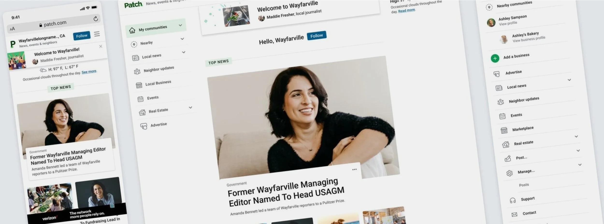
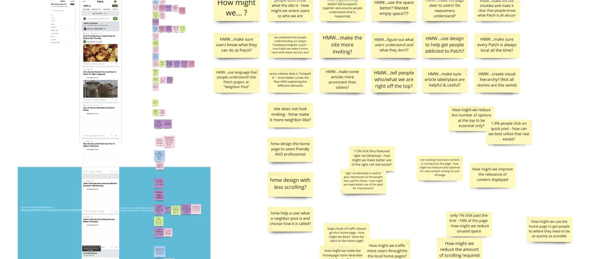
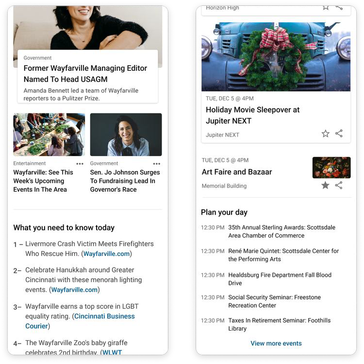
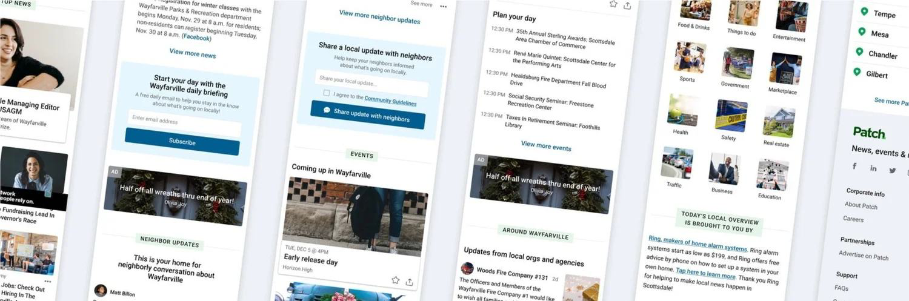
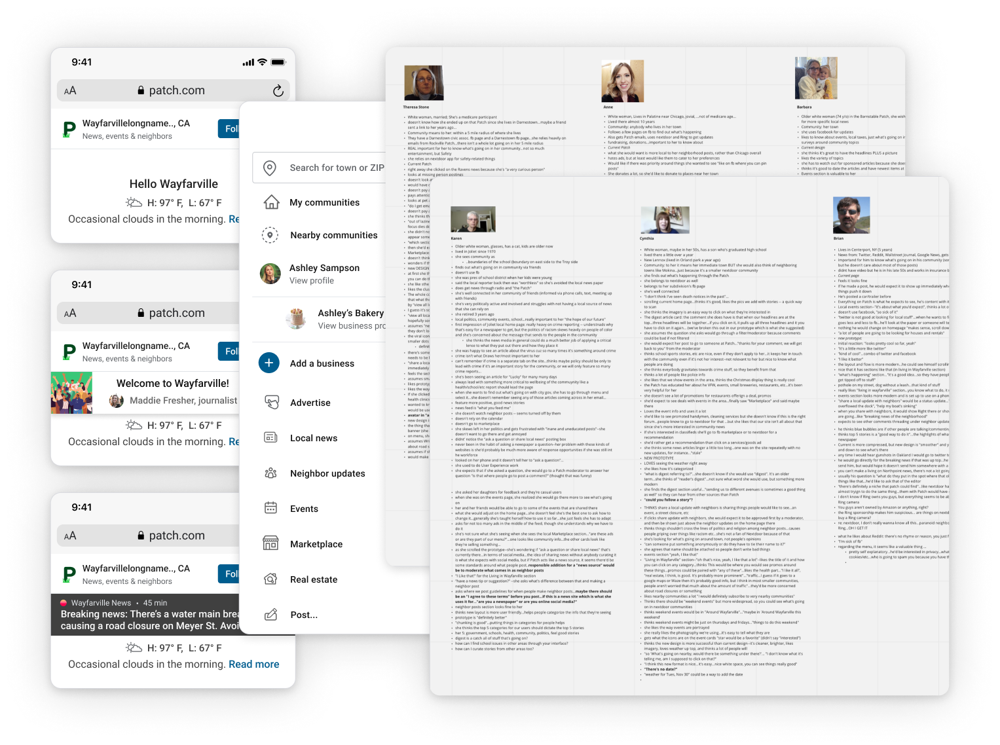

A modern, user-centered source for news & events.

Overview
Patch is “everything local,” informing readers about what’s going on nearby.
While known for quality local content, years without a focus on UX, paired with Patch’s heavy reliance on income from ads and sponsors, had caused the site’s usability to suffer.
I was hired to redesign the Patch app and website to be more modern and user-friendly. Patch wanted to attract a larger, more diverse audience and increase advertising profits through more business link clicks and display-ad views.
Starting with the local homepage
The first page we tackled was the local homepage. We began with a whiteboarding session with a Product Manager, UX researcher, front-end developer and me, the Senior Product Designer. This let us rapidly align our goals, ideas and requirements.

We identified 3 primary problems
{{ p.t }}
{{ p.d }}

Opportunity
How might we help readers quickly share and receive the most important goings-on in their community?
We turned our problems into opportunities
{{ p.t }}
{{ p.d }}

Final task
Creating an editor interface
With the reader-facing homepage in place, I moved on to the editors’ interface, where editors modified the homepage for their Patch community. Each section on the page acted as a separate component, most of them customizable.
After interviewing editors and gathering feedback, I designed an interface that included only the editable components, the ability to save by section or as a whole, and the option to preview the page at any time.

User testing
Every user we interviewed was excited about the clarity and modern aesthetic of the new homepage.
Even longstanding Patch readers were surprised to learn more about what Patch offers. We considered the designs a success and were ready to move forward.
Next steps
From 5 pilot communities to 1,200+ across the nation.
The homepage and editor interface were set to be developed, QA’d and launched in 5 Patch communities as an initial test. Based on feedback over 2–3 months, the team would make any necessary iterations and update every Patch homepage in 1,200+ communities across the nation.